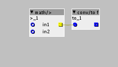

Hello 
Lately I have begun to build some more advanced objects and I am now facing a problem that I don't know how to solve. I have build what I want to make with factory objects and now I want to try to code it. I have succesfully done this with other things, but this one I can not seem to wrap my head around coding.
I am trying to combine these 2 objects:

I think it comes down to the sum of the 2 inputs of the math/> object is converted into boolean signal, just by making the outlet bolean... But I cant do that in code, just change the outlet. Well, I dunno how to do that.
So I am wondering if there is a helpful soul that that could give a hint on how to do that internally in an object with code?
Thanks, Jaffa